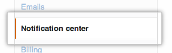
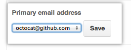
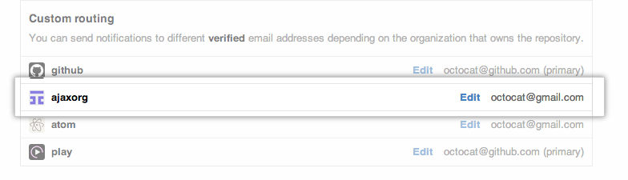

If you belong to an organization, you can configure the email account you want notifications sent to. For example, if you belong to an organization for work, you may want your notifications sent to your work email address, rather than your personal address.
Notification emails will only be sent if you have configured your notifications to be sent via email.
In the user settings sidebar, click Notification center. 
In the "Primary email address" list, select the email address you'd like notifications sent to. 
Customizing email routes per organization
If you are a member of more than one organization, you can configure each one to send notifications to any of your verified email addresses.
In the user settings sidebar, click Notification center.
Under "Custom routing," find your organization's name in the list. 
- Click Edit next to the email address you want to change.

- Select one of your verified email addresses, then click Save.